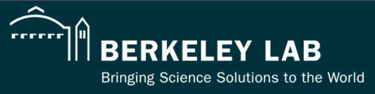
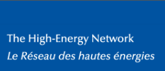
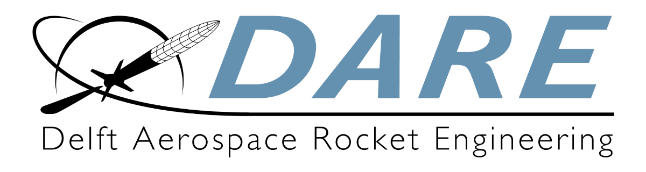

Social Links
Website:
amitabhyadav.com Google scholar:
Amitabh Yadav LinkedIn:
amitabhydv Github:
amitabhyadav
Email:
amitabhydv@gmail.com
SyncMind : I'm the co-founder and chief AI/ML engineer at SyncMind. We're an early stage startup from a core electronics background and carrying an experience in development across the spectrum: from the physical semiconductor engineering to the high-level software development. We're featured here at Swissnex - the start up enabling initiative by the Switzerland's State Secretariat for Education, Research and Innovation.
Featured: (click on the logos)
 ,
,
 ,
 ,
,
,
In Print and Digital Media:
,
,
,
,
, etc.
(Selected) GitHub Repositories and Project Reports
Note: Most of the projects I have done are either not open source (e.g. my current work at CERN, SyncMind.org IP Design etc.) or covered under NDA (e.g. Lockheed Martin RO/RO Project). I have tried to present a list of the projects code and reports that I found an was able to disclose. Please do reach out to me to discuss any and all of the projects. Thank you for understanding.
My Github
(1.)
Shor's Algorithm on IBM Quantum Experience (
presentation )
(2.)
Grover-Long subroutine implementation on IBM Quantum Experience (
presentation )
(3.)
IBM Quantum Challenge 2020
(4.)
Classic Snake Game implementation in Java (using Design Patterns)
(5.)
Cansat Glider and Rocket Separation Codebase (Critical Design Reviews:
CANSAT 2016 ,
CANSAT 2017 )
(6.)
Presentation on Compression and De-noising of Ultrasonic NDT data - Bhabha Atomic Research Center, Mumbai (India)
etc.
Publications, Patent and Poster
(1.) A. Yadav, H. Boukabasche, N. Gerber, K. Ceesay-Seitz, D. Perrin, "
ROMULUSlib: An autonomous, TCP/IP-based, multi-architecture C networking library for D.A.Q. and Control applications ", International Conference on Accelerator and Large Experimental Physics Control Systems (ICALEPCS) Conference, Shanghai Advanced Research Institute, China (October 2021). (citations: 1)
(2.) H. Gray, J. Wonho, V. R. Pascuzzi, R. Sawada, K. Terashi, A. Yadav, "
Quantum Pattern Recognition for Tracking in High Energy Physics ", SnowMass 2021.
(3.) K. Bertels, A. Sarkar, T. Hubregtsen, M. Serrao, A. A. Mouedenne, A. Yadav, A. Krol, I. Ashraf "
Quantum Computer Architecture Toward Full-Stack Quantum Accelerators " in IEEE Transactions on Quantum Engineering, vol. 1, pp. 1-17, 2020, doi: 10.1109/TQE.2020.2981074. (citations: 31)
(4.) Amitabh Yadav, Carlos Solans Sanchez, Abhishek Sharma (2017) "
FE-I4 Firmware Development and Integration with FELIX for the Pixel Detector ", CERN Document Server, Meyrin, Switzerland.
(5.) Amitabh Yadav, Vivek Kaundal, Abhishek Sharma et. al. (2017) "
Wireless Sensor Network Based Patient Health Monitoring and Tracking System ", In Proceeding of International Conference on Intelligent Communication, Control and Devices (pp. 903-917). Springer, Singapore. (citations: 7)
Pre-prints:
(6.) A. Yadav, W. Lavrijsen, P. Calafiura, H. Gray, "
A Quantum Hough Transform Algorithm for Track Reconstruction ", arXiv preprint in preparation.
(7.) Amitabh Yadav, Nader Khammassi, Koen Bertels, "
CC-Spin: A scalable Microarchitecture design for Control of Spin-Qubit Quantum Accelerator " (2020).
Thesis:
(8.) M.Sc. thesis on "
CC-Spin: A Micro-architecture design for scalable control of Spin-Qubit Quantum Processor ", August 2019 (available online on TU Delft Education Repository.
Patent:
(9.) Amitabh Yadav, Vivek Kaundal, Abhishek Sharma et. al. (2016) "
WSN based Patient Health Monitoring and Tracking System ". (Indian Patent App.No. 201611039333)
Please Manually enter application number and search on the portal.
(Selected) CONFERENCE PRESENTATIONS/POSTERS:
(1.) Invited talk on “
ROMULUSlib: A TCP/IP based, multi-architecture C networking library for DAQ and Control ” at the International Conference on Accelerator and Large Experimental Physics Control Systems, at Shanghai Advanced Research Institute (SARI), China. (2021) -- also, video below.
(2.) Invited Talk on “
CC-Spin: A Micro-architecture design for scalable control of Quantum Processors ” at Advanced Quantum Testbed (AQT) Meeting, Lawrence Berkeley National Laboratory/University of California, Berkeley. (April 2, 2020)
(3.) Poster on “
Quantum Pattern Recognition for High Energy Physics (HEP) ”. (March 9, 2020) HEP.QPR (W. Bhimji, W. Lavrijsen, P. Calafiura, H. Gray, E. Rohm, A. Yadav) at US Department of Energy, Review Meeting.
(4.) Invited Talk “
Quantum Hough Transform for Charged-Particle Track Reconstruction ”. (Jan 7, 2020) at Annual AT
LAS LBNL Meeting 2020, Lawrence Berkeley National Laboratory.
Presentations and Talks
ICALEPCS 2021 Conference Talk: Talk on ROMULUSlib (An Autonomous, TCP/IP-Based, Multi-Architecture C Networking Library For D.A.Q. and Control Applications)
VIDEO
SyncMind AI Talk:
About SyncMind: We want to empower humanity by making human thought more accessible.
Equipped with a standard set of principles of signal processing, machine learning and computer architecture design, along with the adoption of new research paradigm in hardware/software co-design optimization and In-Memory computing,
we want to streamline the process of conditioning and interpretation of neural signals by making a custom integrated circuit (IC) that processes neural signals.
VIDEO
More Interesting Presentations and Demonstrations
Demonstration of Cansat System 2015, Dehradun, India
VIDEO
Demonstration of GPS Interfacing
VIDEO
Demonstration of 433MHz Telemetry Module
VIDEO
Demonstration of Active RFID Module
VIDEO